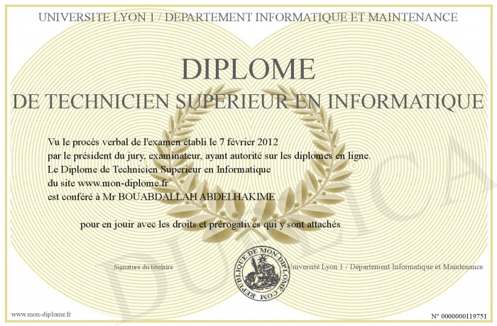
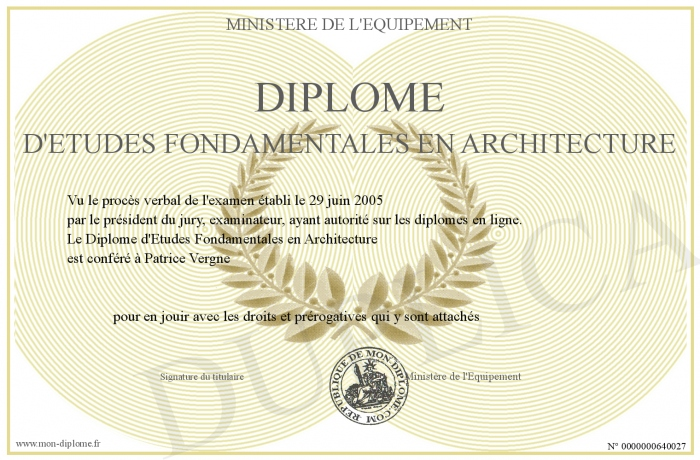

Je m'appele yassine je trouve un travail pas fatiguant dans mon domaine et j'aime l'informatique je suis dans une start up pour me progresser je veux un travail pour l'ete. je suis travailleur mais je me fatigue vite je suis courageux et moderne. j'aime les tucs nouveaux bla bla bla bla
j'ai eu quelques diplome en informatique et l'architectures et je voudrais d'autres diplome pour ameliorer mon CV
 tunisien francais allemand anglais espagnol chinois